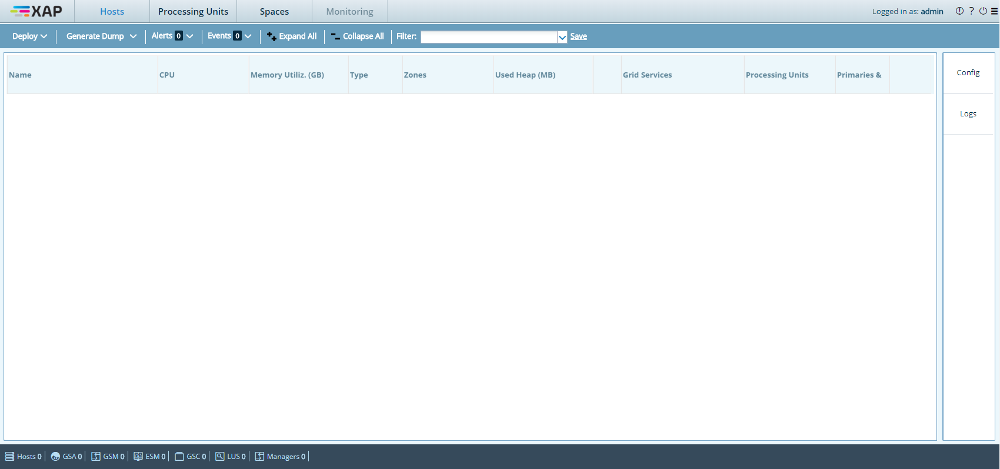

The Web Management Console is a web application that enables users to quickly understand the state of a running data grid cluster and monitor the running components, such as the physical hosts, JVMs and deployed Processing Units.
This user interface complements the GigaSpaces Management Center and provides a lightweight alternative for monitoring a running cluster, without having to install the
The Web Management Console application is located under
When you first start using gs-webui.sh(bat) script to start a Jetty web container with the Web Management Console application running within it. After the user interface starts, there's no need to deploy or perform any additional steps.
In standalone mode, the web container listens by default on port 8099. To view the Web Management Console point your browser to http://<standalone server host>:8099, where <standalone server host> is the host on which you launched the gs-webui script. In this mode, the default context path for the Web Management Console is the root context path ("/").
Parameters can be passed using one of the following methods: specifying a custom properties file (recommended method), or specifying individual properties. Both methods are explained below.
ssl.custom.properties - Path to ssl properties file.
Example of usage: ./gs-webui.sh -ssl.custom.properties /home/evgeny/dev/cases/ssl-props.properties
The following mandatory properties are expected in the properties file:ssl.keyStorePath=/PATH/xxx-key-store.jksssl.keyStorePassword=passw-xxx-key-storessl.trustStorePath=/PATH/xxx-trust-store.jksssl.trustStorePassword=passw-xxx-trust-store
ssl.keyManagerPassword - Password (if any) for the specific key within the key store. Optional parameter.If there is no keyManagerPassword, then the keyStorePassword (see below) is used instead.
ssl.keyStorePassword - Password for the key store.ssl.keyStorePath - File or URL of the SSL Key store.ssl.trustStorePath - File name or URL of the trust store location.ssl.trustStorePassword - Password for the trust store.
In order to run the Web Management Console server with SSL ( using the HTTPS protocol instead of HTTP), the following parameters must be provided as arguments to the gs-webui script:
ssl.keyManagerPassword - Password (if any) for the specific key within the key store.ssl.keyStorePassword - Password for the key store.ssl.keyStorePath - File or URL of the SSL Key store.ssl.trustStorePath - File name or URL of the trust store location.ssl.trustStorePassword - Password for the trust store.#Specify SSL via a command line argument
./gs-webui.sh -ssl.keyManagerPassword <passw> -ssl.keyStorePassword <passw> -ssl.keyStorePath <key-store-path> -ssl.trustStorePath <trust-store-path> -ssl.trustStorePassword <passw>
#Specify SSL via a command line argument
gs-webui.bat -ssl.keyManagerPassword <passw> -ssl.keyStorePassword <passw> -ssl.keyStorePath <key-store-path> -ssl.trustStorePath <trust-store-path> -ssl.trustStorePassword <passw>
You can also use the WEBUI_JAVA_OPTIONS environment variable to set any JVM parameter, such as heap size (defaults to -Xmx512m) and other JVM settings.
In order to disable anonymous login, use com.gigaspaces.webui.username.mandatory system property. The following example shows how to do this:
#Specify user name field as mandatory
export USER_NAME_MANDATORY=true
./gs-webui.sh
#Specify user name field as mandatory
set USER_NAME_MANDATORY=true
gs-webui.bat
If you configured your -Dcom.gs.security.enabled=true property, you will see the following login window:
The Lookup groups and Locators are loaded from the setenv/setenv-overrides script.
For more information on how to secure the grid services, refer to Securing Grid Services. Lookup groups and Lookup Locators can be configured in the configuration files described in Configure Lookup Groups and Locators.
When you reach the stage of a proper deployment, or are preparing to move to production, you can deploy the Web Management Console as described below.
To deploy the Web Management Console to the
In this case, the Web Management Console actually monitors the runtime environment on which it runs.
The following example shows how to do this using the
The above command deploys the Web Management Console to the
For more information about
You can deploy the Web Management Console to a third-party servlet container, for example, Apache Tomcat (must be Tomcat 8 and above in order to support Java 8). Consult your web container documentation for deployment instructions.
When deploying to a third-party web container like Apache Tomcat, you must repackage the xap-webui-[version-build].war file and add the following .JAR files to the WEB-INF/lib directory of the xap-webui-[version-build].war file:
.jar files located under By default, these are not part of the the gs-webui.war file because they are automatically included in the classpath of both the standalone container and the
After the web application starts, point your browser to the proper location. For example, if you start the web application using a standalone web container, the default URL is http://<standalone server host>:8099.
You will see the following screen:

The Web Management Console supports the following web browsers:
The web application communicates with the runtime components of the
YOu can set up a reverse proxy for the Web Management Console. This may be preferable in certain scenarios, such as when access to the Web Management Console is done via a gateway. Reverse proxy setups are currently available and tested only on the Apache web server.
Enable the relevant modules, by uncommenting (or adding) the following lines inside httpd.conf:
LoadModule proxy_module modules/mod_proxy.so
LoadModule proxy_http_module modules/mod_proxy_http.so
Add your server's name, and define a virtual host for the configuration, where gs.webui.com represents your server's DNS:
NameVirtualHost *:80
<VirtualHost *:80>
ServerName gs.webui.com
</VirtualHost>
Create mappings to channel proxy paths (webui-endpoint being the proxied path obscuring the address of the Web Management Console):
<VirtualHost *:80>
...
ProxyPass /webui-endpoint/ http://127.0.0.1:8099/
ProxyPassReverse /webui-endpoint/ http://127.0.0.1:8099/
ProxyPreserveHost on
</VirtualHost>
Set a redirection rule for serving the login page:
<VirtualHost *:80>
...
RedirectMatch /Gs_webui.html /webui-endpoint/Gs_webui.html
</VirtualHost>
You can dump logging information to custom files on the Apache server by adding the following rules:
<VirtualHost *:80>
...
ErrorLog "logs/webui-error_log"
CustomLog "logs/webui-access_log" common
</VirtualHost>
For more information on Apache's reverse proxy configuration, refer to the corresponding entry on the Apache Tutor website.